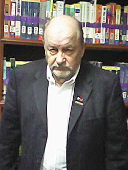

|  |
Topics:
The Bizarre Homicide Conviction of U.S. Marine Joseph Scott Pemberton and Implications for U.S. – Philippine Relations in the Era of PRC-China Military Expansion in the South China Sea |
Our geo-political analysis examines continuing agitation of Filipinos over uncompromising territorial claims and expanding military presence of the People’s Republic of China inside the sprawling, contested “9 Dash Line” zone of the South China Sea. In response Philippine policy makers have embraced the long standing 1951 Mutual Defense Treaty with the United States. Yet political scientists have amply recorded the “love - hate” relationship between the North American mother country and its former Philippine colony, World War II “blood ally” and occasionally described Southeast Asia “client state.” Indeed, some of the residual bitterness, ambivalence and tensions from the old alliance and Cold War permanent basing years (1947-1992) washed to the surface in late 2015. The reminder came via the bizarre and troubling homicide conviction of Joseph Scott Pemberton, a 19-year-old enlisted U.S. Marine on shore leave in Olongapo City. Pemberton was charged with murder in the grisly slaying of a transgender Filipina he met in a pickup bar within sight of the former Subic Bay Naval Complex. Convicted of the lessor charge of homicide in a controversy addled trial that enthralled the Filipino public, the Pemberton Affair rekindled latent public uneasiness over the stained legacy of perceived inequities and injustices. Such questions include the U.S. command’s inability to control its own men and it’s apparently continued toleration of soldiers’ and sailors’ unlawful dalliances with sex industry workers. Never adequately addressed also is the nearly buried issue of irresponsible or careless military servicemen who fathered tens of thousands of biracial Amerasian offspring left abandoned - a result of socialization and personal relationships with Filipina nationals. Not fully resolved as well is a suspected lack of or frailty of legal protection for Philippine citizens when they come in conflict with the U.S. defense juggernaut. Surely it is a new chapter for this unique U.S. and Philippine geo-political narrative given the specter of rising PRC-Chinese national expression cum military accretion and the corresponding demonstration of Philippine eagerness to sign the 2014 R.P. – U.S. Enhanced Defense Cooperation Agreement (EDCA). For it is EDCA that raises the reality of semi-permanent re-basing by granting U.S. defense forces virtually untrammeled access to Philippine military installations nationwide. Lurking anew, therefore, are traces of the “ghosts” of hard times past symbolically if not starkly captured in the Pemberton Affair.
Dr. P.C. “Pete” Kutschera is an independent international researcher and recognized contemporary authority on issues confronting biracial military Amerasians abandoned in the Philippines during the long U.S. colonial and neo-colonial involvement in the archipelago. A licensed social worker and retired U.S. Armed Forces Reserve Lieutenant Colonel, he has presented more than a dozen international research conference papers. He has also authored or co-authored numerous scholarly journal articles on this and related topics including accounts of Pan Amerasians populating other nation-states of East/Southeast Asia. His doctoral dissertation concentrated on poverty, stigmatization and mental health problems facing military Filipino Amerasians left in the wake of 1991-92 U.S. military base closures inside Luzon’s AMO (Angeles, Metro Manila and Olongapo City) Amerasian Triangle – an original term from Dr. Kutschera’s germinal research. He has lectured tirelessly on this controversy invoking international social work and human rights issue since 2012 at major conferences and symposia. These venue sites range from Australia, Canada, Cambodia, Dubai, UAE and Manila and Cebu in the Philippines to Singapore, South Korea, Taiwan-the Republic of China, Thailand and the U.S.A. He is founder of the Albany, New York-based Amerasian Research Network, Ltd. and co-founder of the Angeles, Pampanga, Luzon-based Philippine Amerasian Research Center (PARC), both non-profit organizations dedicated to Filipino and Pan Amerasian human research. Dr. Kutschera is a U.S. citizen and permanent resident of the Philippines and married 25 years to a Cebuana native.